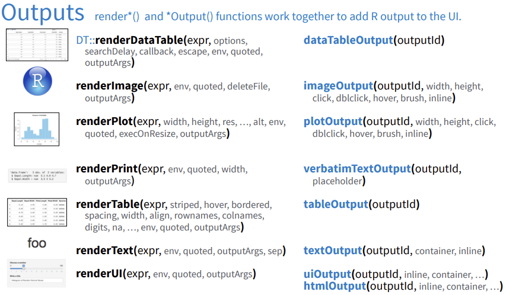
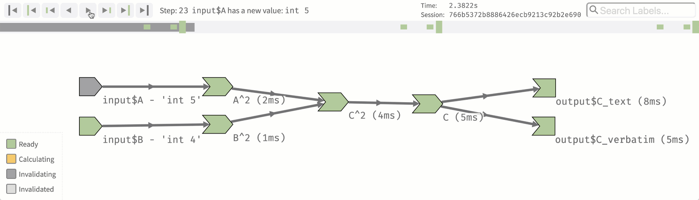

Code
library(shiny)
ui <- fluidPage(
"Hello, world!"
)
server <- function(input, output, session) {
}
shinyApp(ui, server)These materials provide an introduction to using R Shiny for data storytelling. They were prepared for the Mastering Storytelling for Pharma Data Science Professionals short course at the Pharmaceutical Data Science Conference 2024 held at University of Connecticut in March 2024.
The materials were prepared by Jonathan Tisack (BeiGene) and Dr. Zhiwei Yin (Bristol Myers Squibb).
Jonathan Tisack, M.S. Mathematics
Data Scientist at BeiGene
R/Shiny user for over 5 years
Shiny enables any R user to bring their work to the web
Many great data visualization technologies are made for the web (D3, Plotly)
Web technologies allow for interactivity (Example: 538 March Madness Predictions)
Rate your experience level with R:
I barely know any R
I know enough R to get around
I know R inside out
Have you used Shiny before?
Several options for running the code during the course:
Shinylive is now the easiest way to run a simple Shiny app. Shiny will run in your browser alongside a basic editor.
RStudio IDE is the best way to do Shiny development. There are two ways to use it:
Shiny Basics
Use Cases
Learning Resources
Shiny has been around for 10+ years and there are many learning resources available.

Typically a shiny app is written in an R file called app.R. Within app.R there are three components:
A user interface object, typically named ui. This object controls the layout of the app.
A server function. This function controls the interactive component of the app. It is where your typical R code is executed, such as code that does data transformations and generates visualizations.
A call to the shiny package function shinyApp(), which takes the ui object and server function as arguments.
Here is a minimal shiny app:
library(shiny)
ui <- fluidPage(
"Hello, world!"
)
server <- function(input, output, session) {
}
shinyApp(ui, server)Simple Shiny App (Open in Shinylive editor)
library(shiny)
# Global variables can go here
default_n <- 200
# Define the UI
ui <- bootstrapPage(
numericInput('n', 'Number of obs', default_n),
plotOutput('plot')
)
# Define the server code
server <- function(input, output) {
output$plot <- renderPlot({
hist(runif(input$n))
})
}
# Return a Shiny app object
shinyApp(ui = ui, server = server)K-Means Clustering Example (Open in Shinylive editor)
library(shiny)
# k-means only works with numerical variables,
# so don't give the user the option to select
# a categorical variable
vars <- setdiff(names(iris), "Species")
ui <- pageWithSidebar(
headerPanel('Iris k-means clustering'),
sidebarPanel(
selectInput('xcol', 'X Variable', vars),
selectInput('ycol', 'Y Variable', vars, selected = vars[[2]]),
numericInput('clusters', 'Cluster count', 3, min = 1, max = 9)
),
mainPanel(
plotOutput('plot1')
)
)
server <- function(input, output, session) {
# Combine the selected variables into a new data frame
selectedData <- reactive({
iris[, c(input$xcol, input$ycol)]
})
clusters <- reactive({
kmeans(selectedData(), input$clusters)
})
output$plot1 <- renderPlot({
palette(c("#E41A1C", "#377EB8", "#4DAF4A", "#984EA3",
"#FF7F00", "#FFFF33", "#A65628", "#F781BF", "#999999"))
par(mar = c(5.1, 4.1, 0, 1))
plot(selectedData(),
col = clusters()$cluster,
pch = 20, cex = 3)
points(clusters()$centers, pch = 4, cex = 4, lwd = 4)
})
}
# Create Shiny app ----
shinyApp(ui = ui, server = server)You can change the way a Shiny app behaves by setting options (full documentation). Some useful ones for development are:
options(shiny.error = browser) will open the RStudio debugger when the app encounters an error
options(shiny.autoreload = TRUE) will monitor files in your working directory and auto reload the app whenever a file change is detected. Can be configured to monitor specific file patterns.
options(shiny.trace = TRUE) prints messages sent between the Shiny server and the browser. Results in a lot of output but good for debugging.
The UI is mainly composed of inputs and outputs.
Inputs are widgets that get input from the user

Outputs are placeholders that are later filled in by the server function. Each output has a corresponding render function in the server.

Code in the user interface is only run once. To illustrate this, try inspecting the ui object.
library(shiny)
ui <- fluidPage(
numericInput('n', 'Number of obs', 100),
plotOutput('plot')
)print(ui)<div class="container-fluid">
<div class="form-group shiny-input-container">
<label class="control-label" id="n-label" for="n">Number of obs</label>
<input id="n" type="number" class="shiny-input-number form-control" value="100"/>
</div>
<div class="shiny-plot-output html-fill-item" id="plot" style="width:100%;height:400px;"></div>
</div>str(ui)List of 4
$ :List of 10
..$ name : chr "jquery"
..$ version : chr "3.6.0"
..$ src :List of 1
.. ..$ file: chr "www/shared"
..$ meta : NULL
..$ script : chr "jquery.min.js"
..$ stylesheet: NULL
..$ head : NULL
..$ attachment: NULL
..$ package : chr "shiny"
..$ all_files : logi FALSE
..- attr(*, "class")= chr "html_dependency"
$ : NULL
$ : NULL
$ :List of 1
..$ :List of 3
.. ..$ name : chr "div"
.. ..$ attribs :List of 1
.. .. ..$ class: chr "container-fluid"
.. ..$ children:List of 2
.. .. ..$ :List of 3
.. .. .. ..$ name : chr "div"
.. .. .. ..$ attribs :List of 1
.. .. .. .. ..$ class: chr "form-group shiny-input-container"
.. .. .. ..$ children:List of 2
.. .. .. .. ..$ :List of 3
.. .. .. .. .. ..$ name : chr "label"
.. .. .. .. .. ..$ attribs :List of 3
.. .. .. .. .. .. ..$ class: chr "control-label"
.. .. .. .. .. .. ..$ id : chr "n-label"
.. .. .. .. .. .. ..$ for : chr "n"
.. .. .. .. .. ..$ children:List of 1
.. .. .. .. .. .. ..$ : chr "Number of obs"
.. .. .. .. .. ..- attr(*, "class")= chr "shiny.tag"
.. .. .. .. ..$ :List of 3
.. .. .. .. .. ..$ name : chr "input"
.. .. .. .. .. ..$ attribs :List of 4
.. .. .. .. .. .. ..$ id : chr "n"
.. .. .. .. .. .. ..$ type : chr "number"
.. .. .. .. .. .. ..$ class: chr "shiny-input-number form-control"
.. .. .. .. .. .. ..$ value: chr "100"
.. .. .. .. .. ..$ children: list()
.. .. .. .. .. ..- attr(*, "class")= chr "shiny.tag"
.. .. .. ..- attr(*, "class")= chr "shiny.tag"
.. .. ..$ :List of 3
.. .. .. ..$ name : chr "div"
.. .. .. ..$ attribs :List of 4
.. .. .. .. ..$ id : chr "plot"
.. .. .. .. ..$ class: chr "shiny-plot-output"
.. .. .. .. ..$ style: chr "width:100%;height:400px;"
.. .. .. .. ..$ class: chr "html-fill-item"
.. .. .. ..$ children: list()
.. .. .. ..- attr(*, "class")= chr "shiny.tag"
.. ..- attr(*, "class")= chr "shiny.tag"
- attr(*, "class")= chr [1:2] "shiny.tag.list" "list"
- attr(*, "html_dependencies")=List of 1
..$ :function ()
.. ..- attr(*, "class")= chr "shiny.tag.function"Shiny server logic is based on a reactive programming paradigm.
Reactivity means that when an input changes, all dependent outputs are recalculated.
Server logic is expressed in the server(input, output, session) function, which Shiny invokes each time a new session starts.
A session starts whenever a user opens the shiny app. A single shiny server may run many sessions from different (or the same) users.
The parameters of the server function (input, output, session) are separate for each session.
The three parameters of the server function are:
input: A read-only list of the inputs defined in the UI, and their current values. This is how the server function can use the inputs defined in the UI.
output: A list of outputs defined in the UI. This is how a user defines the app’s outputs, and it must always be used with a render function.
session: An optional parameter with a lot of functionality, mainly for advanced users. See the documentation for details.
Code in the server function is not run linearly, it is lazy and reactive.
Lazy means that that it is only run when needed. If a user can’t see an output on their screen, the code to generate that output is not run. If an app has multiple pages/tabs, the code for an output isn’t run until the user navigates to that tab.
Reactive means that when an input is used in the code that defines an output, that output takes a dependency on the input. Whenever a dependency of an output changes, the output code will be re-run.
This means that the order of code in the server function does not matter. Code is run when needed, based on the reactive graph.
Examples from Posit Documentation.
A simple reactive graph.
server <- function(input, output) {
output$distPlot <- renderPlot({
hist(rnorm(input$obs))
})
}A more complex reactive graph. Outputs can depend on any combination of inputs. Dependencies can overlap between outputs.
server <- function(input, output) {
output$plotOut <- renderPlot({
hist(faithful$eruptions, breaks = as.numeric(input$nBreaks))
if (input$individualObs)
rug(faithful$eruptions)
})
output$tableOut <- renderTable({
if (input$individualObs)
faithful
else
NULL
})
}A reactive graph with an intermediate reactive expression.
fib <- function(n) ifelse(n<3, 1, fib(n-1)+fib(n-2))
server <- function(input, output) {
currentFib <- reactive({ fib(as.numeric(input$n)) })
output$nthValue <- renderText({ currentFib() })
output$nthValueInv <- renderText({ 1 / currentFib() })
}Reactlog is an R package that visualizes the reactive graph for a particular Shiny app session. This can be very helpful when trying to debug a large app with a lot of reactivity.

Walk through the k-means clustering example and build a mental model of how it works.
Add print statements to each reactive code block and test the app. Which blocks are re-run when each input changes?
Turn on options(shiny.trace = TRUE). What messages are sent between server and browser when an input changes?
Remove the plotOutput() from the ui. How does this change the execution of reactive code blocks and the messages sent between server and browser?
bslib is a package that expands the user interface toolkit for Shiny. It is particularly helpful for custom theming and dashboard design. Think of it like Shiny UI 2.0.
Bootstrap is a frontend web framework that Shiny utilizes when it generates the HTML/CSS/JS from the ui object. Web frameworks like Bootstrap exist so that web developers don’t reinvent the wheel each time they create a new project. You don’t need to know anything about Bootstrap to create a Shiny app, but can be helpful if you are a user interface perfectionist. By default shiny utilizes Bootstrap 3, and the bslib package uses Boostrap 5 (the latest version).
ShinyUiEditor is a package that launches a low-code tool for building a Shiny UI and generating app code. You don’t actually need to install it to use it, you can launch a demo through the package website.
Htmlwidgets are R packages that enable using Javascript visualization libraries in R. Widgets can be used at the R console and embedded in Shiny apps.
One of the most popular htmlwidget packages to use with Shiny is plotly, which is an R package based on the plotlyjs web framework for plotting. There is a freely available book written by the package author Carson Sievert: Interactive web-based data visualization with R, plotly, and shiny.
There are many R packages available that extend Shiny in various ways. A nice list of the most popular ones is maintained in the Github repo nanxstats/awesome-shiny-extensions.

Shiny Server is open source web server software. A single server running Shiny Server can host many shiny apps.
Shinylive uses WebR to run a shiny app in the browser. There is no backend server required.
Two ways to use shinylive:
Create your app on shinylive.io and use the “Share” button to generate a link to it. All of your app’s code and other assets will be compressed to a string and contained in the generated link. Then simply send this link to a user. This is the easiest way to share a Shiny app but it’s limited to small apps.
Use the shinylive R package to create and host your own static website. This is easy to do in combination with the shinylive quarto extension.